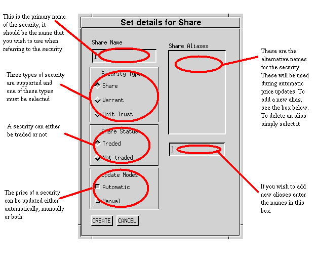
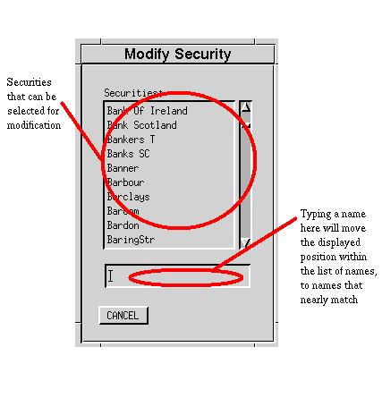
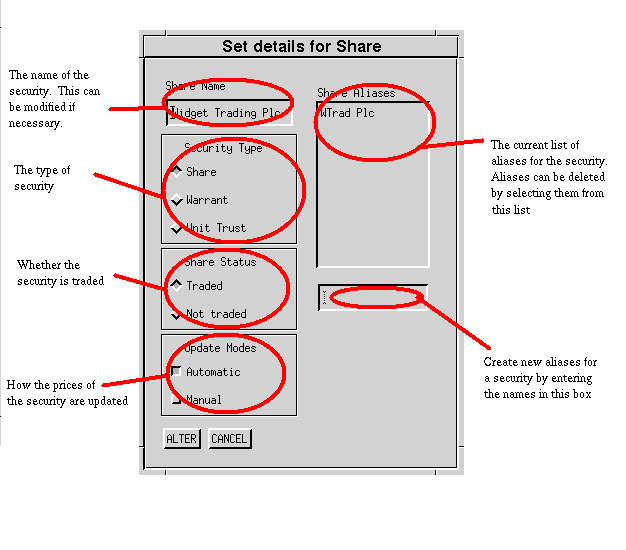
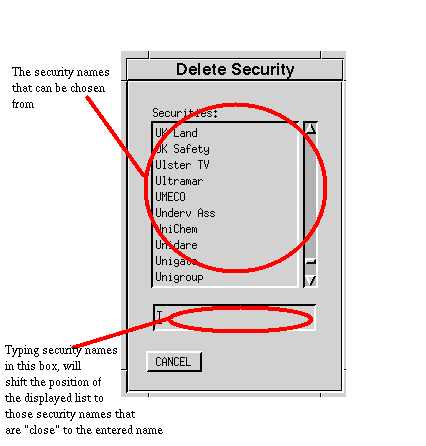
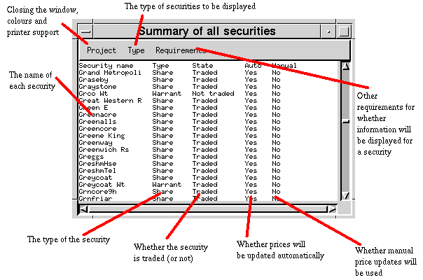

The Securities menu allows you to add, delete and modify the information relating to a particular security as well as providing you with a complete summary for all securities:
The securities menu is just one set of menu options on the entire XSM menu bar. The overview provides a complete top level list of all menus.This creates a security that can then be used in any portfolio. You cannot create transactions or dividends for a security that has not been defined with this dialog.
You should complete all parts of the dialog. The share name field should contain the primary name of the security. Normally this will be the full legal name, but there may be occasions where you will wish to abbreviate this. Other aliases for the security should be added by entering the name of each alias in the text entry box below the 'Share Aliases' list. When you press return, if the alias does not already exist, the alias will be added to the list. If the alias exists, it will be deleted. You may also delete aliases by simply clicking on the alias you wish to delete. For teletext downloads, the aliases must include the teletext name.
The security type can be one of 'Share', 'Warrant' or 'Unit Trust'. You should select the most appropriate. In most scenarios, you need only use these categories as a mechanism to group like types of security.
The share status will normally be set to 'Traded'. Generally 'Not Traded' is used to remove securities from the working set without deleting them. This need arises because they are in use by one or more portfolios and deleting the security would result in useful history being lost.
The update modes value specifies how prices will be updated. 'Automatic' updates means that prices from sources like teletext will be used to bring the price database up to date for the named security. 'Manual' means the user will be prompted for the price. You may have both automatic and manual updating enabled for a security.
When you are happy with the securities configuration, click on 'CREATE'. Prior to XSM creating the security, you will be asked for confirmation. You may edit or delete the security at a later date, so the commitment is not one way.

Once a security has been created, you may wish to modify it. This can include renaming the security. When you select this option, you will be presented with the current list of known securities:

Select the security that you wish to modify. A new dialog will appear that is identical to that of the security creation dialog, except that you are modifying the named security.

Only very rarely does the need for deleting a security arise. In most cases you are advised to modify the state of the security so that it is marked as 'Not Traded' rather than physically removing the security from the XSM database. When you ask to delete a security you will be shown the current securities:

Pick the security that is to be deleted. XSM will then run a consistency check on that security and the current portfolios. If it can find transactions, dividends or prices for the security you will be offered a chance to abort the delete process. If at any point you abort the process, NO information is lost.

The summary lists all the securities known to the system and how they are configured. The 'Type' menu allows you select which securities are of interest and the 'Requirements' menu allows you to further filter those of interest by specifying the states you are interested in.
If the system has many defined securities (>2000) and if you do not filter the securities of interest, then there will be a delay when the output for the window is generated.
Hardcopy can be obtained by selecting the Print option on the Project menu. This will display the standard printer dialog.